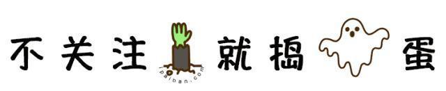
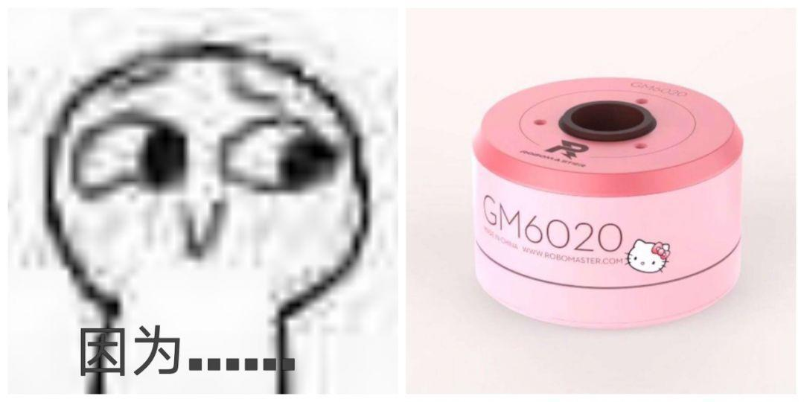
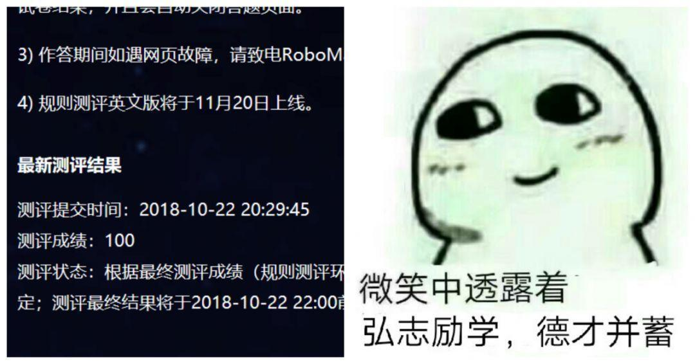
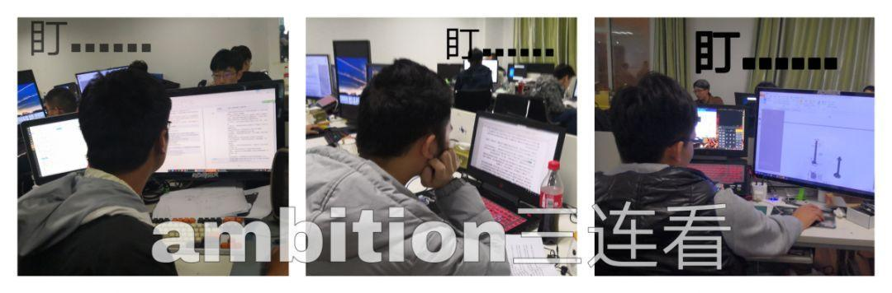
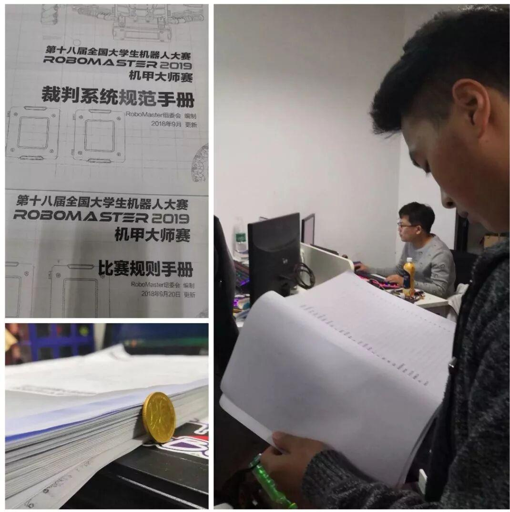
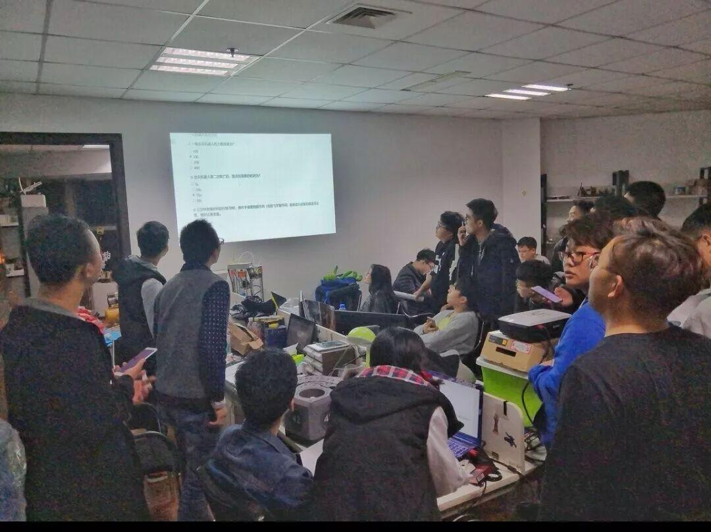
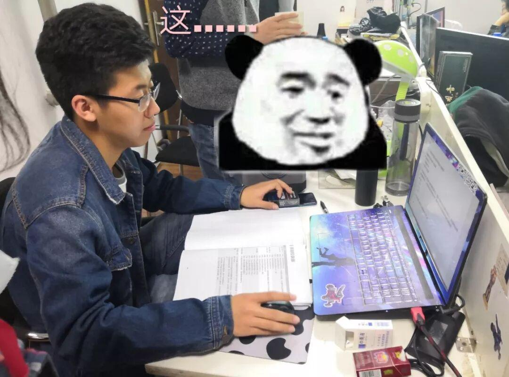
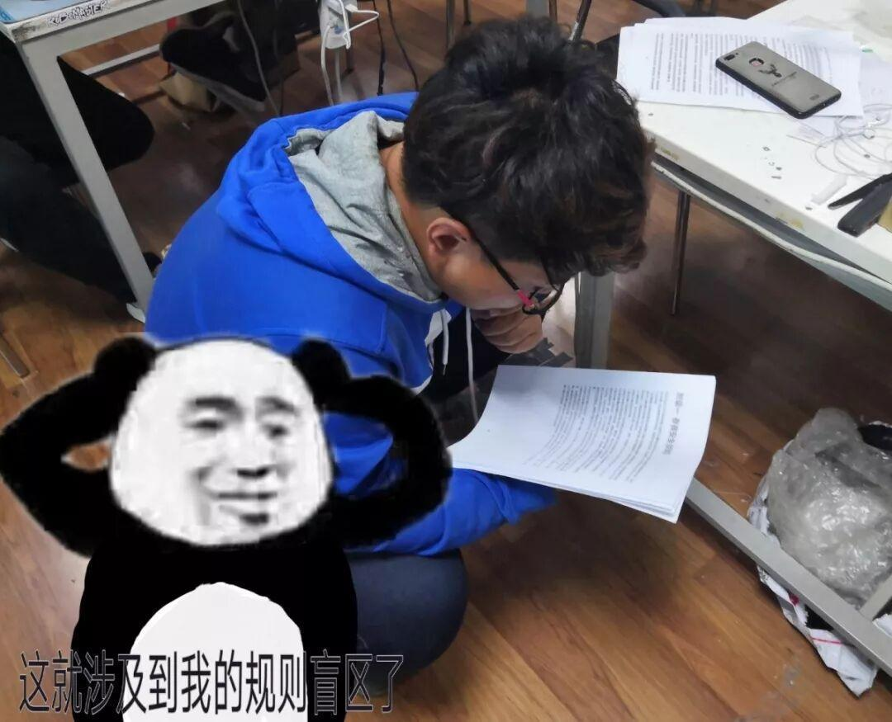

万圣节测评回顾

万圣节快乐！我不给糖也不恶作剧，只想告诉你我喜欢的人就是在看文章的你！为了证明我喜欢你，我选择和你分享十月二十二日的那天的心情------我就像个怀春的少女等待心上人的到来一样在那里等着他.......
2018年 10月22日 09：56
快十点了，你们准备好了吗
要快开始了！啊啊啊！粉色！好激动！
准备好了，来吧！测评！开始吧！
是的，“我”不是一个人，我是一个团体；“他”也不是人，他是“满分测评”。我们期待已久的测评终于开始了！看着下图的粉红色，是不是有点怦然心动的感觉？ 
于是为了让我们心动的我们的“粉色”，为了我们的RM2019，就算是上课也无法阻挡我们对“考试”的热情，哪怕在信号情况极差的综合楼，也积极的进入了手机消息99+模式......
△
是时候展现我们的实力了
我们最后失败了，我们放弃了----吗？呵，放弃，怎么可能！这样恐怕我们的校训也是不会同意的？！

不过，到底是什么让我们成功拿下让众人尖叫的成绩？ 忽略我们失败时候的狼嚎让我们得瑟一回 是幸运？是坚持？是实力？是经验？还是我们一起看看吧！
▼
首先就是背规则背规则背规则！队长；不会规则的拖出去！
 
▼
然后就是测评积累的经验。每次失败后，我们都从中汲取经验（以及祈祷满分的降临）：
1.先确定绝对正确的答案。
2.有争议的答案截图获取原文。
3.错误答案撤回，避免出现误导其他人。
▼
最后，也是必然的一点------就是我们坚持不懈的优秀精神 粉色动力 与团结一心的满分信念！



从早上十点开始测评，一直有人呆在实验室测评，其他人也都尽可能用手机一起答题。晚上一下课，大家便一起呆在实验室，直道拿到满分，直道激动的欢呼贯彻楼层！
通过测评或许不难，拿到满分或许也不易，但是更珍贵的还是我们的所获得的机会，我们的努力，我们的成长，还有我们一起为同一个目标奋斗的时光。
最后，献上一首小诗，送给也许拥有相同梦想的你！万圣节快乐！
努力
我们穿过机械的长廊
我们运行编写的代码
带着我们的梦想
一步一步延伸到赛场
搅乱本该散落在地的尘埃
飞扬着和我们一起
向着RM赛场奔去
编辑：张诗梦
万圣节快乐请扫码